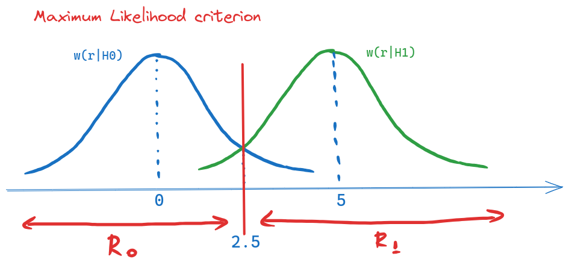
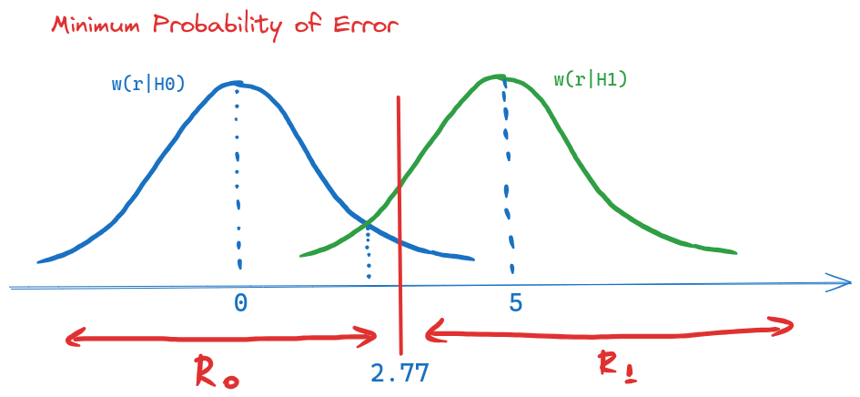
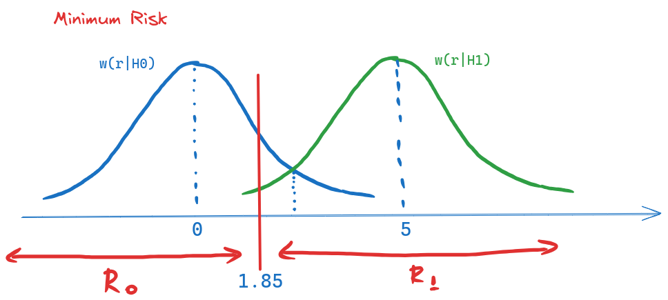
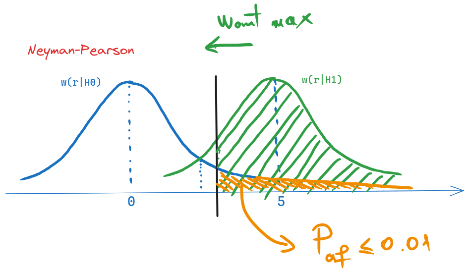
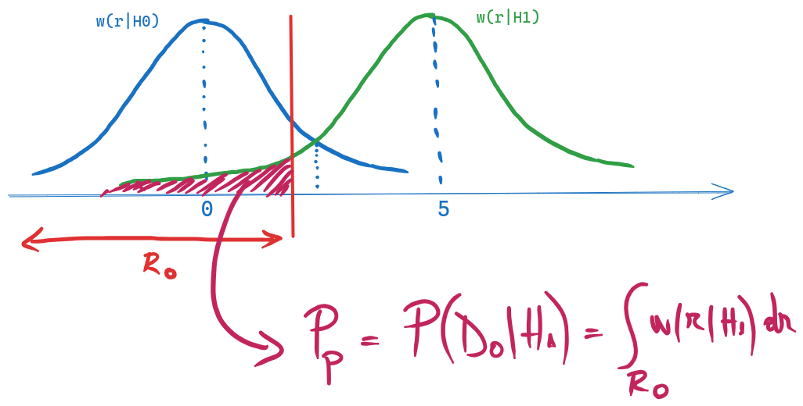
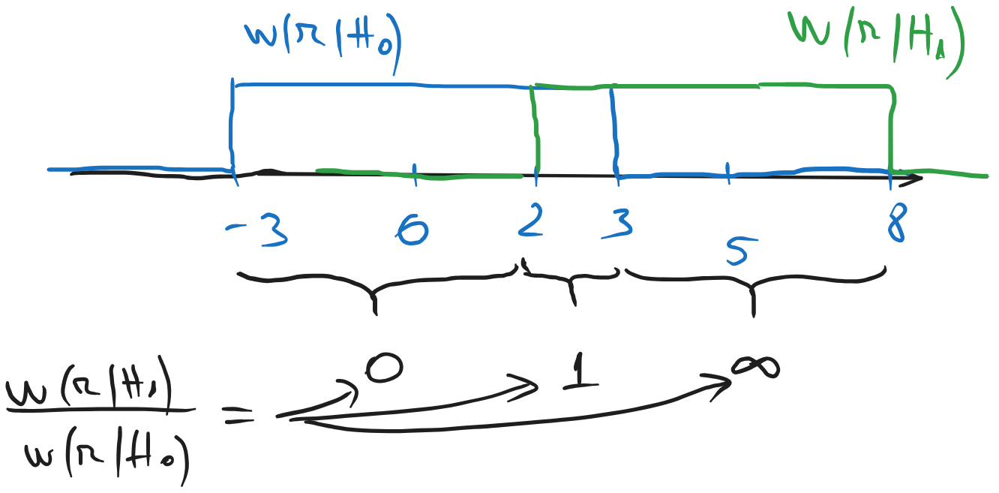
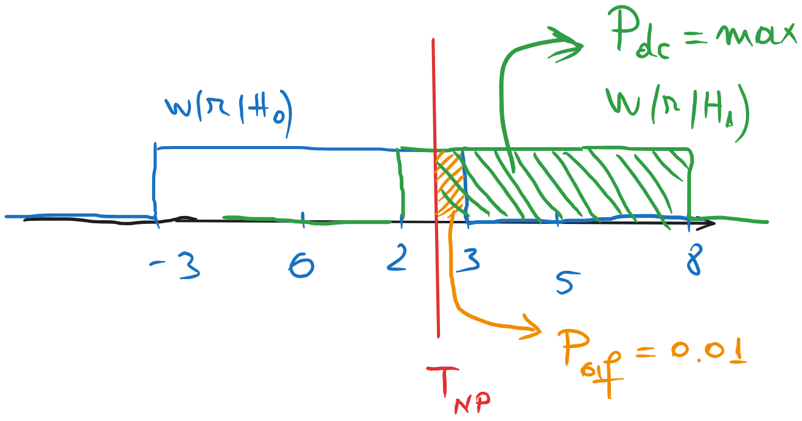
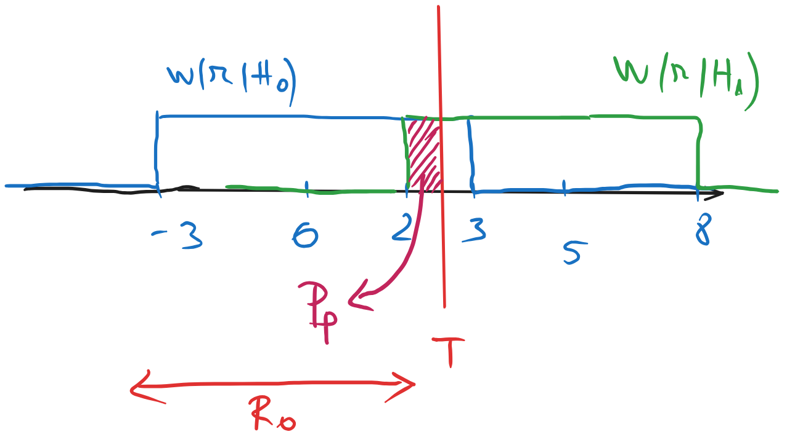

11 Seminar 04: Decizii, decizii
\[ \newcommand{\grtlessH}{\underset{{H_0}}{\overset{H_{1}}{\gtrless}}} \renewcommand{\vec}[1]{\mathbf{#1}} \]
11.1 Exercițiul 1
Un sistem airbag detectează un accident prin eșantionarea semnalului de la un senzor cu 2 valori posibile: \(s_0(t) = 0\) (OK) sau \(s_1(t) = A\) (accident), unde \(A = 5\).
Semnalul este afectat de zgomot gaussian \(\mathcal{N}\;(\mu=0, \sigma^2=2)\).
Costurile scenariilor sunt: \(C_{00} = 0\), \(C_{01} = 100\), \(C_{10} = 10\), \(C_{11} = 0\).
Probabilitățile celor două ipoteze sunt \(P(H_0) = 2/3\), \(P(H_1) = 1/3\).
La recepție se ia un singur eșantion \(r\) din semnal.
Cerințe:
- Găsiți regiunile de decizie \(R_0\) și \(R_1\) pentru toate criteriile de mai jos:
- ML
- MPE
- MR
- Neyman-Pearson cu probabilitatea (condiționată) de alarmă falsă \(P_{af} \leq 0.01\)
- Un prag \(T\) ales arbitrar la valoarea \(T=3\)
- Calculați probabilitatea de pierdere, pentru toate criteriile de mai sus
- Care este decizia luată cu fiecare criteriu de mai sus, dacă \(r = 3.1\)?
- Considerând criteriul MR, care este valoarea minimă a lui \(A\) pentru ca probabilitatea (necondiționată) de pierdere sa fie maxim \(P_{p} \leq 10^{-6}\)?
Rezolvare
a). Zgomotul fiind de tip gaussian, pentru criteriile ML, MPE și MR pragul \(T\) care separă regiunile de decizie este dat de: \[T = \frac{s_0(t_0) + s_1(t_0)}{2} + \frac{\sigma^2}{s_1(t_0) - s_0(t_0)} \cdot\ln K\] Conform figurilor de mai jos, regiunile de decizie vor fi intervalele \((-\infty, T)\) și \((T, \infty)\).
Așadar, pentru criteriul ML, \(K=1\) și: \[T_{ML} = \frac{0 + 5}{2} + \frac{2}{5 - 0} \cdot\ln 1 = 2.5\] \[R_0 = (-\infty, 2.5),\quad R_1 = (2.5, \infty)\]

Pentru criteriul MPE, \(K=\frac{P(H_0)}{P(H_1)} = 2\) și: \[T_{MPE} = \frac{0 + 5}{2} + \frac{2}{5 - 0} \cdot\ln 2 = 2.77\] \[R_0 = (-\infty, 2.77),\quad R_1 = (2.77, \infty)\]

Pentru criteriul MR, \(K=\frac{(C_{10} - C_{00})P(H_0)}{(C_{01} - C_{11})P(H_1)} = \frac{1}{5}\) și: \[T_{MR} = \frac{0 + 5}{2} + \frac{2}{5 - 0} \cdot\ln(\frac{1}{5}) = 1.85\] \[R_0 = (-\infty, 1.85),\quad R_1 = (1.85, \infty)\]

Criteriul Neyman-Pearson se formulează astfel:
“Se alege pragul \(T\) astfel încât să se maximizeze probabilitatea de detecție corectă \(P_{dc} = P(D_1|H_1)\), păstrând probabilitatea de alarmă falsă \(P_{af} = P(D_1|H_0)\) mai mică sau egală cu o valoare dată \(\lambda\)”. În cazul nostru, \(\lambda = 0.01\).
Valoarea pragului \(T_{NP}\) rezultă din cele două condiții enunțate mai sus, ilustrare în figura de mai jos:
- pentru a maximiza \(P(D_1|H_1)\), adică verde din figură, pragul ar trebui să fie cât mai la stânga
- probabilitatea de alarmă falsă \(P(D_1|H_0)\), adică aria colorată portocaliu în figură, nu trebuie să depășească 0.01

Acest lucru înseamnă că pragul \(T_{NP}\) trebuie să fie ales în așa fel încât aria colorată portocaliu să fie exact egală cu 0.01. Dacă este mai la stânga, probabilitatea de alarmă falsă depășește 0.01, iar dacă este mai la dreapta, probabilitatea de detecție corectă nu e cea maximă posibilă.
Probabilitatea de alarmă falsă \(P_{af}\) este dată de: \[P_{af} = P(D_1|H_0) = \int_{T_{NP}}^{\infty} w(r|H_0) dr = 1 - F_{H_0}(T_{NP})\] unde funcția \(F_{H_0}\) este funcția de repartiție a lui \(w(r|H_0)\). \[P_{af} = P(D_1|H_0) = \int_{T_{NP}}^{\infty} w(r|H_0) dr = 1 - F_{H_0}(T_{NP})\]
Așadar, condiția \(P_{af} = 0.01\) devine: \[1 - F_{H_0}(T_{NP}) = 0.01\] \[1 - \frac{1}{2}(1 + erf(\frac{T_{NP} - 0}{2})) = 0.01\] \[erf(\frac{T_{NP} - 0}{2}) = 0.98\] \[\frac{T_{NP} - 0}{2} = erf^{-1}(0.98) = 1.64\] \[T_{NP} = 3.28\]
Așadar, pentru criteriul Neyman-Pearson, rezultatul este: \[T_{NP} = 3.28\] \[R_0 = (-\infty, 3.28),\quad R_1 = (3.28, \infty)\]
În fine, pentru situația unui prag arbitrar \(T=3\), regiunile de decizie sunt: \[R_0 = (-\infty, 3),\quad R_1 = (3, \infty)\]
b). Probabilitatea necondiționată de pierdere este dată de: \[P_p = P(H_1) \cdot P(D_0|H_1) = P(H_1) \cdot \int_{R_0} w(r|H_1) dr\] unde probabilitatea condiționață de pierdere \(P(D_0|H_1)\) corespunde cu zona colorată în roșu din figura de mai jos.

În funcție de pragul \(T\), \(P(D_0|H_1)\) este integrala dintre \(-\infty\) și \(T\) din distribuția lui \(w(r|H_1)\), adică: \[ \begin{align} P(D_0|H_1) &= \int_{-\infty}^{T} w(r|H_1) dr \\ &= F_{H_1}(T) \\ &= \frac{1}{2}(1 + erf(\frac{T - 5}{2})) \\ \end{align}\]
Așadar: \[T_{ML} = 2.5, \quad Pp = \frac{1}{3} \cdot \frac{1}{2}(1 + erf(\frac{2.5 - 5}{2})) = ...\] \[T_{MPE} = 2.77, \quad Pp = \frac{1}{3} \cdot \frac{1}{2}(1 + erf(\frac{2.77 - 5}{2})) = ...\] \[T_{MR} = 1.85, \quad Pp = \frac{1}{3} \cdot \frac{1}{2}(1 + erf(\frac{1.85 - 5}{2})) = ...\] \[T_{NP} = 3.28, \quad Pp = \frac{1}{3} \cdot \frac{1}{2}(1 + erf(\frac{3.28 - 5}{2})) = ...\] \[T = 3, \quad Pp = \frac{1}{3} \cdot \frac{1}{2}(1 + erf(\frac{3 - 5}{2})) = ...\]
c). Pentru un eșantion \(r=3.1\), tot ce avem de făcut este să verificăm în ce regiune de decizie se află acesta. Dacă \(r \in R_0\), atunci decizia este \(D_0\), iar dacă \(r \in R_1\), decizia este \(D_1\).
Așadar, pentru criteriul ML, \(r=3.1 \in R_1\), decizia este \(D_1\).
Pentru criteriul MPE, \(r=3.1 \in R_1\), decizia este \(D_1\).
Pentru criteriul MR, \(r=3.1 \in R_1\), decizia este \(D_1\).
Pentru criteriul NP, \(r=3.1 \in R_0\), decizia este \(D_0\).
Pentru pragul \(T=3\), \(r=3.1 \in R_1\), decizia este \(D_1\).
d). Pentru criteriul MR, probabilitate de pierdere este \(Pp \leq 10^{-6}\) implică \(P(D_0|H_1) \leq 3 \cdot 10^{-6}\). Pe de altă parte, avem \[P(D_0|H_1) = F_{H_1}(T_{MR}) = \frac{1}{2}(1 + erf(\frac{T_{MR} - A}{2}))\]
Valoarea lui \(A\) reprezintă valoarea lui \(s_1(t)\), și afectează valoarea lui \(T_{MR}\).
Așadar, va trebui ca din condiția \(P(D_0|H_1) \leq 3 \cdot 10^{-6}\) să gasim condiția asupra lui \(T_{MR}\), din care apoi vom găsi condiția asupra lui \(A\).
Procedăm astfel: \[ \begin{align} P(D_0|H_1) &\leq 3 \cdot 10^{-6} \\ \frac{1}{2}(1 + erf(\frac{T_{MR} - A}{2})) &\leq 3 \cdot 10^{-6} \\ erf(\frac{T_{MR} - A}{2}) &\leq 6 \cdot 10^{-6} - 1 \\ \frac{T_{MR} - A}{2} &\leq erf^{-1}(6 \cdot 10^{-6} - 1) \\ \frac{T_{MR} - A}{2} &\leq -3.45 \\ T_{MR} &\leq A - 6.9 \\ \end{align}\]
La rândul său, \(T_{MR} = \frac{s_0(t_0) + s_1(t_0)}{2} + \frac{\sigma^2}{s_1(t_0) - s_0(t_0)} \cdot\ln(K)\), adică în cazul nostru: \[T_{MR} = \frac{0 + A}{2} + \frac{2}{A - 0} \cdot\ln(\frac{1}{5})\]
Așadar, condiția \(T_{MR} \leq A - 5.9\) devine: \[\frac{A}{2} + \frac{2}{A} \cdot\ln(\frac{1}{5}) \leq A - 6.9\] \[\frac{A}{2} - \frac{2}{A} \cdot\ln(\frac{1}{5}) - 6.9 \geq 0\] \[A^2 - 13.8 A + 4 \ln(\frac{1}{5}) \geq 0\]
Soluțiile ecuației de gradul doi sunt: \[A_{1,2} = \frac{13.8 \pm \sqrt{13.8^2 - 4 \cdot 4 \ln(\frac{1}{5})}}{2} = 28.5 ; -0.9\]
Parabola \(A^2 - 13.8 A + 4 \ln(\frac{1}{5})\) este pozitivă în afara intervalului dintre cele două soluții, adică a intervalului \((-0.9, 28.5)\).
Presupunând că \(A\) este pozitiv, rezultatul este \(A \geq 28.5\).
11.2 Exercițiul 2
Repetați exercițiul 1 considerând zgomot uniform \(U[-3, 3]\) în loc de zgomot gaussian.
Rezolvare
a). Zgomotul fiind de tip uniform, pentru criteriile ML, MPE și MR nu mai putem folosi formulele rapide care ne furnizau pragul \(T\) în cazul zgomotului gaussian.
Pentru zgomot diferit de cel gaussian, va trebui să utilizăm formula generală: \[\frac{w(r|H_1)}{w(r|H_0)} \grtlessH K\]
Cele două distribuții condiționate \(w(r|H_0)\) și \(w(r|H_1)\) sunt reprezentate mai jos.

Putem calcula ușor valorile raportului \(\frac{w(r|H_1)}{w(r|H_0)}\) pe intervale:
- pentru \(r \in (-3, 2)\): \(\frac{w(r|H_1)}{w(r|H_0)} = \frac{0}{1/6} = 0\)
- pentru \(r \in (2, 3)\): \(\frac{w(r|H_1)}{w(r|H_0)} = \frac{1/6}{1/6} = 1\)
- pentru \(r \in (3, 8)\): \(\frac{w(r|H_1)}{w(r|H_0)} = \frac{1/6}{0} = \infty\)
- în afara intervalului \((-3, 8)\), ambele distribuții sunt nule, deci această situație nu ne interesează (nu se întâmplă niciodată).
Acum putem decide cărei regiuni aparține fiecare interval, comparând aceste valori cu \(K\).
Pentru criteriul ML, \(K=1\) și: \[R_0 = (-3, 2),\quad R_1 = (3, 8), \quad (2,3) = indecizie\]
Pentru criteriul MPE, \(K=\frac{P(H_0)}{P(H_1)} = 2\) și: \[R_0 = (-3, 3),\quad R_1 = (3, 8)\]
Pentru criteriul MR, \(K = \frac{1}{5}\) și: \[R_0 = (-3, 2),\quad R_1 = (2, 8)\]
Pentru criteriul Neyman-Pearson, probabilitățile sunt cele din figura de mai jos. Pragul \(T_{NP}\) trebuie ales astfel încât să avem condiția \(P_{af} = 0.01\), unde \(P_{af}\) este aria colorată cu portocaliu, adică un dreptunghi cu latura \(3 - T_{NP}\) și înălțimea \(1/6\).

Avem așadar: \[(3 - T_{NP}) \cdot \frac{1}{6} = 0.01\] de unde rezultă \[T_{NP} = 2.94\] și deci regiunile de decizie sunt: \[R_0 = (-3, 2.94),\quad R_1 = (2.94, 8)\]
În fine, pentru \(T=3\), regiunile de decizie sunt, în mod evident: \[R_0 = (-3, 3),\quad R_1 = (3, 8)\]
b). Probabilitatea necondiționată de pierdere este dată de: \[P_p = P(H_1) \cdot P(D_0|H_1) = P(H_1) \cdot \int_{R_0} w(r|H_1) dr\] Integrala se calculează asupra funcției \(w(r|H_1)\) pe intervalul \(R_0\), după cum se vede în figura de mai jos.

În funcție de regiunea de decizie \(R_0\) obținută anterior pentru fiecare criteriu, avem:
Penru criteriul ML, \(P_p = \frac{1}{3} \cdot \int_{-3}^{2} 0 dr = 0\).
Penru criteriul MPE, \(P_p = \frac{1}{3} \cdot 1 \cdot \frac{1}{6} = \frac{1}{18}\).
Penru criteriul MR, \(P_p = \frac{1}{3} \cdot 0 = 0\).
Pentru criteriul NP, \(P_p = \frac{1}{3} \cdot (2.94 - 2)\frac{1}{6} = \frac{0.94}{18}\).
În fine, pentru \(T=3\), \(P_p = \frac{1}{3} \cdot 1 \cdot \frac{1}{6} = \frac{1}{18}\).
c). Pentru un eșantion \(r=3.1\), tot ce avem de făcut este să verificăm în ce regiune de decizie se află acesta.
Pentru criteriul ML, \(r=3.1 \in R_1\), decizia este \(D_1\).
Pentru criteriul MPE, \(r=3.1 \in R_1\), decizia este \(D_1\).
Pentru criteriul MR, \(r=3.1 \in R_1\), decizia este \(D_1\).
Pentru criteriul NP, \(r=3.1 \in R_1\), decizia este \(D_1\).
Pentru pragul \(T=3\), \(r=3.1 \in R_1\), decizia este \(D_1\).
d). Pentru un \(A\) diferit de 5, distribuția lui \(w(r|H_1)\) se va întinde între \(A-3\) și \(A+3\). Dacă \(A \geq 6\), atunci funcțiile nu se suprapun, iar \(P_p = 0\).
Dacă \(A < 6\), atunci funcțiile se suprapun, iar intervalul se suprapunere este \([A-3, 3]\). Acest interval face parte din regiunea de decizie \(R_1\), ceea ce înseamnă că probabilitatea \(P(D_0|H_1)\), care presupune integrarea funcției \(w(r|H_1)\) pe \(R_0\), este 0 întotdeauna.
Așadar, \(P_p = 0\) indiferent de valoarea lui \(A\).